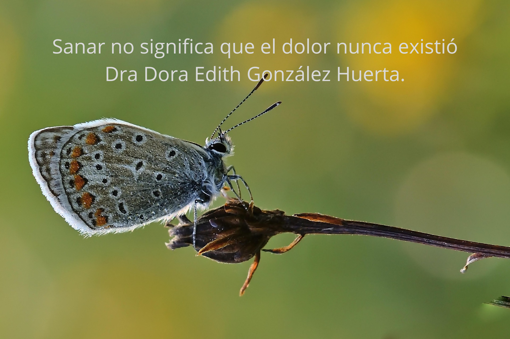
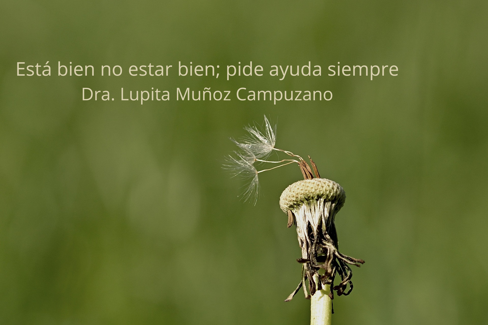

Dra. Lupita Muñoz Campuzano
Fundadora · PsicólogaDedicada a hacer accesible la salud mental y el acompañamiento emocional para todas las personas.
Terapia en línea para México, Estados Unidos y Latinoamérica. Psicólogos y tanatólogos certificados listos para acompañarte por internet. Consultas aisladas desde $400 y programas de 4 o 6 sesiones para cuidar tu salud mental o acompañarte en un duelo.
Dos profesionales de la salud mental unidas por una misión: que nadie atraviese su proceso en soledad. Haz clic en su foto para ver su mensaje.
Dedicada a hacer accesible la salud mental y el acompañamiento emocional para todas las personas.
Impulsa un acompañamiento humano y profesional para atravesar la pérdida y recuperar la calma.
Te acompañamos a cuidar tu salud mental y a transitar tus duelos con guía profesional. Terapia psicológica y tanatológica por videollamada, disponible en México, Estados Unidos y toda Latinoamérica. Tu proceso empieza en casa.
Comenzar mi proceso
Pedir ayuda no debería ser complicado. En pocos minutos puedes elegir entre una consulta aislada o un programa guiado.

Decide si necesitas una consulta aislada, un programa de salud mental o un acompañamiento por duelo, muerte o pérdida.
Según tu horario y lo que necesites, te vinculamos con un psicólogo o tanatólogo certificado.
Agenda tu sesión por videollamada en el horario que te funcione, de 7 a.m. a 11 p.m.
No todos necesitamos lo mismo. Por eso puedes elegir entre una sesión aislada para lo urgente, o un programa guiado de 4 o 6 sesiones para trabajar a profundidad tu salud mental o acompañarte en un duelo.

Únete a una red de psicólogos y tanatólogos. Recibe pacientes sin invertir en publicidad, accede a conferencias magistrales grabadas, bibliografía y materiales para tus sesiones.
Desde una sola sesión hasta un programa guiado. Todo accesible, todo por internet.
Para esos días en los que solo necesitas hablar con alguien.
Un espacio definido para cuidar tu salud emocional.
Acompañamiento especializado para atravesar una pérdida.
Atendemos por videollamada en México, Estados Unidos y Latinoamérica. Próximamente: pago en línea con tarjeta de débito o crédito (Visa / Mastercard), PayPal y transferencia bancaria (SPEI).



Sesiones cálidas y sin juicio, a tu ritmo.
Cédula y documentos revisados por nuestro equipo.
Sesiones confidenciales y datos protegidos conforme a la ley.
Escríbenos y te respondemos en menos de 24 horas.

Si estás en crisis, no estás solo.
Todas las sesiones son privadas, en entornos seguros y con profesionales certificados. Cumplimos con las normativas de protección de datos.
Esta plataforma no sustituye la atención de emergencia. Si tú o alguien cercano está en riesgo, consulta nuestras líneas de emergencia y apoyo emocional.
Ver líneas de emergencia →Música: «Gymnopedie No. 1» — Kevin MacLeod (incompetech.com), licencia CC BY 4.0.